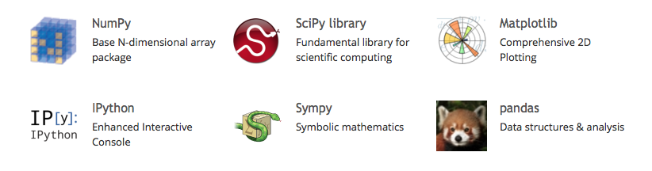

Python is a complete programming solution, in that
Python plus a handful of mature 3rd-party open source libraries, namely Numpy/Scipy for numerical operations, Cython for low-level optimization, IPython for interactive work, and MatPlotLib for plotting provide a formidable baseline for scientific computation and analysis.
source: NumericAndScientific Python libraries
R: You are willing to invest in learning something difficult. You do not care about aesthetics, only availability of packages and getting results quickly.
Python or JVM languages: You are a hacker who may have already been a programmer before you delved into statistics. You are probably willing to run alpha or beta-quality algorithms because the statistical package ecosystem is still evolving. You care about integrating your statistics code into a production codebase.
source: the-statistics-software-signal
NumPy is the fundamental package for scientific computing with Python. It contains among other things:
Besides its obvious scientific uses, NumPy can also be used as an efficient multi-dimensional container of generic data. Arbitrary data-types can be defined. This allows NumPy to seamlessly and speedily integrate with a wide variety of databases.
SciPy is a library that uses NumPy for more mathematical functions. SciPy uses NumPy arrays as the basic data structure, and comes with modules for various commonly used tasks in scientific programming, including linear algebra, integration (calculus), ordinary differential equation solving and signal processing.
Matplotlib is a flexible plotting library for creating interactive 2D and 3D plots that can also be saved as manuscript-quality figures. The API in many ways reflects that of MATLAB, easing transition of MATLAB users to Python. Many examples, along with the source code to re-create them, are available in the matplotlib gallery.
IPython provides a rich architecture for interactive computing with:
SymPy is a Python library for symbolic mathematics. It aims to become a full-featured computer algebra system (CAS) while keeping the code as simple as possible in order to be comprehensible and easily extensible. SymPy is written entirely in Python and does not require any external libraries.
Pandas is data manipulation library based on Numpy which provides many useful functions for accessing, indexing, merging and grouping data easily. The main data structure (DataFrame) is close to what could be found in the R statistical package; that is, heterogeneous data tables with name indexing, time series operations and auto-alignment of data.
Rpy2 is a Python binding for the R statistical package allowing the execution of R functions from Python and passing data back and forth between the two environments. Rpy2 is the object oriented implementation of the Rpy bindings.
Installation of scientific Python packages can be troublesome... these are a couple scientific Python distributions which provide precompiled and easy-to-install collections of scientific Python packages.
End